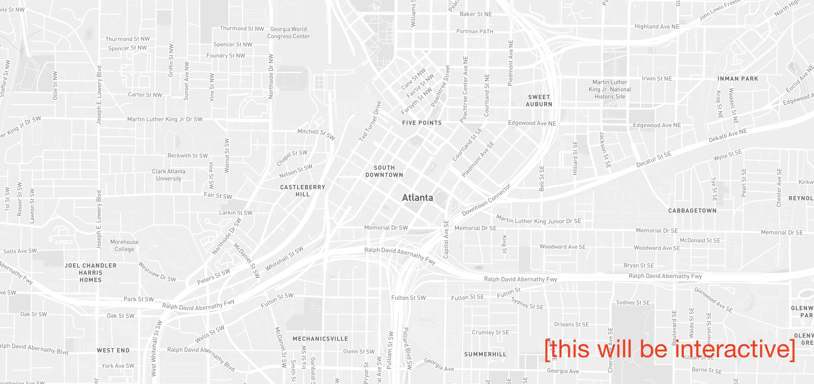

Science + Society
Housing
Equity
Housing
Equity
of Housing Equity

Housing
Equity
On a spring day in 2017 in the front yard of a small, cornflower-blue house on Atlanta’s historic Westside, Mayor Kasim Reed announced the launch of a new city-backed program. Its purpose: to stem the tide of rising property taxes and keep residents of some of the city’s most impoverished neighborhoods in their homes.
“The City of Atlanta is proud to launch this essential program which will help ensure that long-time residents get to share in the prosperity coming to the Westside,” Reed said at the news conference announcing the fund. “This program is another stake in the ground to preserve the character and the history of our transformative Atlanta neighborhoods.”
Modeled after a similar program in Charleston, South Carolina, Atlanta non-profit Westside Future Fund established the Anti-Displacement Tax Fund program in response to a flurry of activity in the area. More people were moving from suburbs back to the city, the new Mercedes-Benz Stadium would soon welcome sports fans to Super Bowl LIII, and the city had recently completed a Westside expansion of the Atlanta BeltLine, a project that turned an unused rail corridor into a multi-use trail.
The potential yearly increase in property taxes that resident’s could see.Comment: add a small “now” and “future” above the numbers
According to Mitchell King, who oversaw implementation of the tax fund program and is now director of Community Engagement and External Affairs at Westside Future Fund, home valuations in the four predominantly black neighborhoods that the fund covers increased by 54-percent over the last tax cycle. “Things are moving, and they’re moving quickly for a lot of folks,” he said. A hike in property taxes could range from no increase at all to upwards of $1,800 a year; currently, the average homeowner pays around $150.
Upon its launch, Westside Future Fund began publicizing details of the program in the media and at community meetings. Five-million dollars in philanthropic donations from the family foundation of businessman and Atlanta sports team owner Arthur Blank, as well as homegrown companies like Delta Air Lines and Chick-fil-A, support the fund. For qualified owner-occupants who have lived in their homes for at least one year, it fully pays for property tax increases over the next 20 years. The homeowner is responsible for a locked-in rate at the amount paid in the tax cycle immediately before their approval.

Photo: The Westside Future Fund.
{kind=link}
Amanda Meng, a research scientist in the Georgia Institute of Technology’s School of Computer Science, was in the crowd of onlookers the day Mayor Reed announced the Anti-Displacement Tax Fund in 2017. She recalls that the owner of the little blue house in the English Avenue community, a nurse with the Veterans Administration, wasn’t home at the time; she chose to go to work instead. A next-door neighbor had a few questions for the mayor.
“There was still concern about whether or not displacement was going to be a problem,” Meng remembered. The neighbor and others also wondered how many long-time residents the fund would help. Meng set out to answer this question using data.
Partnering with the Westside Atlanta Land Trust (WALT), a local community empowerment organization, she and a team of researchers and graduate students analyzed real estate data and historical tax assessments for five Westside Atlanta neighborhoods.
They created an interactive online tool designed to show residents if they qualify for the Anti-Displacement Tax Fund, and projected property taxes for the first seven years of the program. Residents type their address into a search bar, and red and green dots on a map show whether or not they’re eligible for the fund.
The percentage of residents who are renters, and are excluded from the fund.
The Georgia Tech researchers found, and Westside Future Fund confirms, that 92-percent of residents who live in the 2.2 square mile English Avenue, Vine City, Atlanta University Center, and Ashview Heights neighborhoods are renters, disqualifying them from the fund. They also found that if the fund included the adjacent Washington Park neighborhood, which has been similarly affected by a rise in home values, but has a larger percentage of owner-occupants, eligibility for the program would significantly increase.

WALT representatives presented the findings to city planners, who, Meng says, “stuck to their guns.” Meng’s research led her to believe that the tax fund money would be better spent if committed to programs dedicated to more vulnerable residents, like renters. To date, Westside Future Fund has enrolled 92 out of 400 eligible homeowners in the Anti-Displacement Tax Fund.
“If this is really about anti-displacement, can we take the money you’ve committed and put it somewhere else, where it’s going to make more of an impact?” Residents near the BeltLine’s Eastside expansion have seen rents climb by at least 59-percent since 2005.
To date, Westside Future Fund has enrolled 92 out of 400 eligible homeowners in the Anti-Displacement Tax Fund program. In 2018, the non-profit paid approximately $10,000 in property tax increases. In an effort to boost enrollment, late last year they sent staff door-to-door to spread the word about the program.
Takeria Blunt, Meng’s collaborator and a Ph.D. student in Georgia Tech’s Digital Media Program, said the tool they developed shows the power of data science in shedding light on policies affecting poor communities. “We wanted to put out whatever raw data we had to spark conversation among community members; I think that’s what the tool is most useful for.”
In October 2017, researchers demoed the tool to about 50 Westside residents during a neighborhood meeting at Lindsey Street Baptist Church. Residents were curious about the source of the researchers’ data; they also wanted to see a visual comparison of program costs and eligibility between Georgia Tech’s data and estimates provided by Westside Future Fund.
Before enrolling at Georgia Tech last fall, Blunt graduated from Spelman, one of the country’s oldest historically black colleges; for four years, she lived on the university’s campus, located on the Westside. She has attended neighborhood meetings about housing justice and sees how gentrification is changing the community.
“Along with the building of the stadium, developers are preparing to serve a different group of people,” she said. “The types of apartments that are being built, the prices; the West End is going to be totally different in five years.”
There are concerns that development of the mixed-use Gulch complex could further increase property values and displace long-time residents. And in February, the City of Atlanta announced the $5.1 million purchase of an unused stretch of railroad corridor on the Westside to expand the BeltLine. A similar “rail-to-trail” project, Minneapolis’ Midtown Greenway, could provide a glimpse into Atlanta’s future. In the project’s first decade, property values in the area increased by 90-percent, according to a former county commissioner.

Beltline expansion map.
Comment: reproduce this map in our parametric press style?
Photo: Atlanta Journal-Constituion.
Blunt said she’s not against development on the Westside if it’s done the right way. “Change is good when it’s bettering quality of life, but people who have been there for a long time won’t get to experience that, because they can’t afford to live in that area anymore.”
The Impact of Displacement
Scott Markley has been studying the impact of housing displacement in urban and suburban areas since 2014. The University of Georgia Ph.D. student grew up in Atlanta’s northern suburbs, where his parents and grandmother still live. Markley and his family moved to the suburbs in the mid-1990s, settling in a subdivision with modest three and four-bedroom homes and several expansive fields. Today, Markley said, “huge McMansions” worth nearly one-million dollars now occupy the fields.
During visits home over the past five years, he noticed a trend in neighboring Roswell, one of Georgia’s largest cities: the city tearing down older apartment complexes housing mostly Hispanic renters and replacing them with new, high-end developments.
In 2013, Roswell approved replacing a 152-unit apartment complex with upscale housing to increase property values. The city council argued that the demolition would reduce crime and turn around economic decline. Roswell’s then-mayor Jere Wood told reporters that the “city is not in a position to help those people” displaced from the complex.
In the years since, Hispanic-owned businesses have also suffered. Markley recently drove by an office complex that housed several of these businesses; it’s now boarded up. “I don’t know where the former residents went, and I don’t know what happened to those businesses.” Nearby, a new brewery and townhomes selling at a starting price of $700-thousand have sprung up.
The number of displaced people from the razing of apartment buildings for redevelopment projects, in 5 suburban Atlanta cities, since 2010.
Although his research began in Roswell, Markley expanded his scope to other nearby cities — Marietta, Brookhaven, Sandy Springs, and Smyrna — and discovered a similar pattern of redevelopment projects forcing thousands of mostly black and Hispanic renters from their homes. These cities have razed or proposed razing 21 apartment complexes since 2010, displacing more than nine-thousand residents. Census data shows that although Hispanic renters are one third of the area’s total renter population, they make up nearly 60-percent of people displaced through demolition.
“The residents and their desires and their interests were almost entirely disregarded and the city more or less forced through the issue,” Markley said.
Historically, Jim Crow laws and covenants between property owners enforced racially-segregated housing in the United States. In 1968, the Fair Housing Act made all housing discrimination unconstitutional, but, as Markley’s research shows, over the past two decades, cities like those in Atlanta’s northern suburbs have continued to covertly exclude racial minorities from living in white communities. They use coded language like “reduced property values,” “overcrowding,” and “increased crime” to oppose affordable housing construction. They’ve also added another strategy in an effort to preserve majority white populations: legislating forced evictions with redevelopment projects. Over the past two decades, according to Markley, cities like those in Atlanta’s northern suburbs have switched strategies in an effort to preserve majority white populations. In addition to continuing to covertly exclude racial minorities from living in white communities, cities are also legislating forced evictions through redevelopment projects.
“It’s difficult for people moving out of a community in which they’ve settled. Away from the people they know, away from the area that’s considered home, especially if you have kids who are taken out of school during the school year, which can have a detrimental impact on their grades and social life.”
Grasping the full impact of displacement on families is difficult. Where do they live now? Did they find affordable housing near work and school? Apartment demolition creates a rental market where demand exceeds supply, worsening the affordable housing crisis.
Affordable Housing Solutions
Aside from helping Westside residents to maintain their homes, Westside Future Fund is also currently working to provide more affordable housing for renters. As owners cash out their increasingly valuable properties, the non-profit is buying land through philanthropic donations and preserving it for affordable housing units.
Last year they purchased two apartment complexes, Villas at the Dome and 603 Brawley, which now house around 60 families. By 2023, Westside Future Fund’s goal is to create a mixed-income community including 800 affordable housing units for residents earning around $26-thousand a year or less, although they acknowledge that to help the most residents a lower target income is optimal.
Data source: Invest Atlanta.
“People who’ve been in this community for a long time that preserve its historical character and who have also been suffering through a lot—just when the tide is rising you want those ships to be able to rise, too,” said John Ahmann, president & CEO, Westside Future Fund.
Ahmann said the philanthropy model used on the Westside is neither scalable nor sustainable long-term, and that the city will eventually need to step in.
Markley agreed that there’s not a simple solution for addressing housing equity. “It’s tricky because so much of [displacement] is baked into the system. Land value appreciation benefitting property owners is antagonistic to the idea of wanting to rent a place affordably.”
Instead of thinking about housing as a mechanism for increasing profits, he said cities should consider its primary purpose — to shelter people.
Georgia Tech’s Meng said another solution for Atlanta is a well-funded public housing system with subsidized rent; she also encouraged city officials to listen to residents’ concerns.
“Residents have a lot of ideas about what they need, and it’s about the political will to try and do some of those things.”